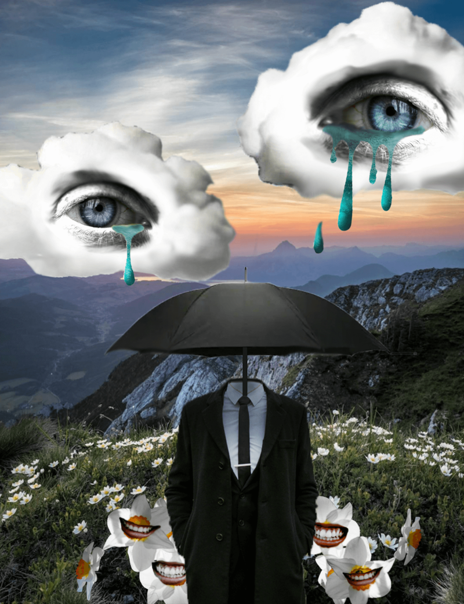
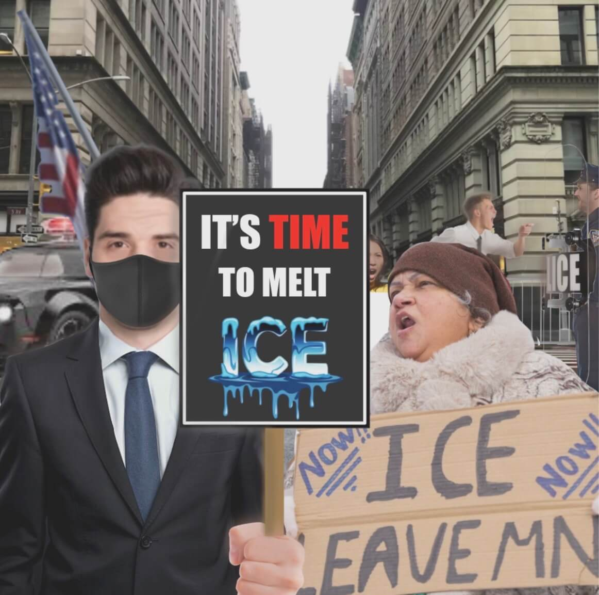

Photoshop Projects

Protection
"Protection" is a surrealist project created in Photoshop. The goal was to evoke a sense of discomfort by using smaller pieces that together form a larger whole. Each component of the artwork combines to create a face that seems to look back at the viewer, generating the feeling of being watched. The title "Protection" reflects the idea of fulfilling one's duty, even when it's challenging. This concept is symbolized by the umbrella, which protects the flowers from the rain.

Gothic in Revolt
"American Gothic in Revolt" is a Photoshop project inspired by Grant Wood's iconic painting, "American Gothic." This project aims to address the pressing issues facing modern society. I chose to focus on the ice protests, highlighting the dissatisfaction of those involved. The title retains the reference to "American Gothic" to symbolize resilience during times of struggle, while the addition of "in Revolt" emphasizes the need for society to resist the larger powers that threaten our country. By incorporating the distinctive elements of "American Gothic," I aimed to depict the oppressive nature of law enforcement by surrounding the protester with police.